All right, so Claude just dropped Claude Design by Anthropic Labs, where you can make prototypes, slides, and one-pagers just by talking to Claude. And yesterday they just dropped Claude Opus 4.7, and that is what is behind the scenes. They literally just dropped this thing. So I'm going to go ahead and open it up right now, and we're going to test it out. All right, here it is, Meet Claude Design. You can import your team's designs. So if you have logos or brand assets or, you know, other pages and things like that, and then you can go ahead and make prototypes. So obviously a lot of the stuff we were able to do already inside of something like Claude Code, but now the interface is much more sort of like your lovable or your bolt. So it's going to lower
Interface & Outils : Navigateur web (X/Twitter), explorateur de fichiers système.
Contenu textuel & Code : Texte du tweet : "Introducing Claude Design by Anthropic Labs: make prototypes, slides, and one-pagers by talking to Claude." ; Liste de dossiers : "Desktop", "Documents", "my-app", "Downloads".
Action / Démonstration : Navigation sur les réseaux sociaux pour présenter l'annonce, et sélection d'un dossier local dans une boîte de dialogue pour initier un projet ou une importation.
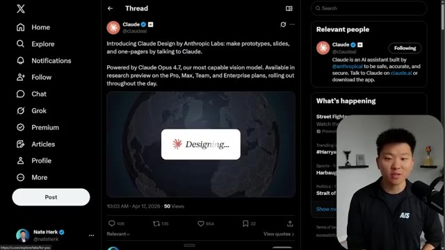
🔍 Agrandir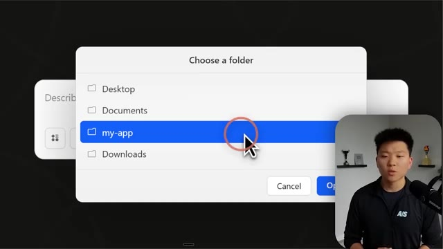
🔍 Agrandirthe barrier to entry even more. And a lot more people might be coming over here to test out cloud design. All right. So this is the main page. We have prototypes where we can create a new project here, either a wireframe or high fidelity. We can create slide decks or we can create from templates or other sorts of things. And you'll also notice at the bottom here, there's this thing that says set up design system, create a design system so that anyone can create good looking designs and assets. I'm assuming that this might be like a design.md sort of thing. So like a template that the agent can look at to always make sure it's following your brand guidelines. So it looks like, yeah, we have a company name and blurb. We would provide examples of our design systems and
Interface & Outils : Claude Design (Research Preview)
Contenu textuel & Code : Menu de navigation (Recent, your designs, Examples), champs de saisie pour le nom du projet, sélecteurs de type de projet (Wireframe, High fidelity) et une carte tutoriel "Learn about Claude Design".
Action / Démonstration : Présentation de l'interface de création de projets et démonstration des options de prototypage disponibles.
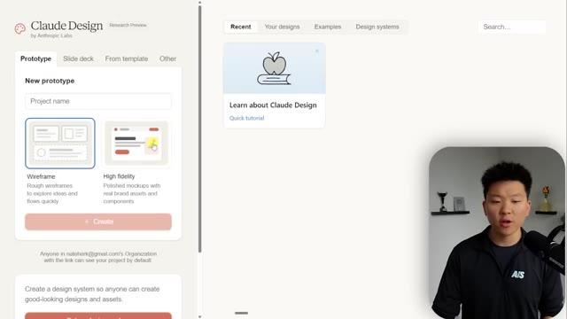
🔍 Agrandirproducts and then any other notes. So that's how we could have every single project that we create in here inside of Cloud Design feels consistent with our brand. So let me just go ahead and fill out some example stuff here. All right. So I set up the name. I set up a little blurb. I actually put in the GitHub repo for our AI Automation Society website. So this website right here. And then I just linked in the brand guidelines and our actual logo. And then just that our brand should feel techie, but also modern and professional. So now that is our design system. I'm going to go ahead and click continue to generation. It will take about 15 minutes to generate your design system.
Interface & Outils : Interface web de configuration de projet (probablement un outil de génération d'UI type Claude/v0) et site web de la communauté AIS.
Contenu textuel & Code : Champs de texte pour "Company name", "Link code on GitHub" (nateherkai/AI-Automation-Society-Website), imports de fichiers ("AIS Brand Guidelines-1.png", "AIS Logo PNG.png") et zone de notes ("Our brand should feel techie but also modern and professional").
Action / Démonstration : Le présentateur renseigne les paramètres de son système de design pour assurer la cohérence de marque sur ses futurs projets.
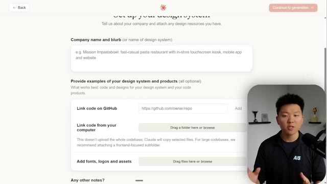
🔍 Agrandir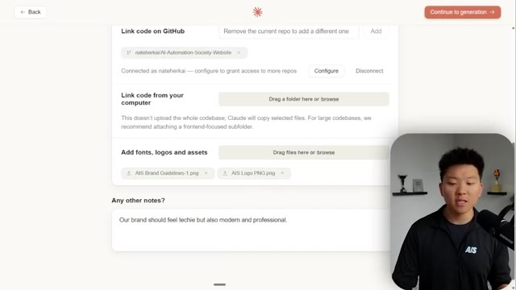
🔍 AgrandirYou can step away, but keep the tab open. Okay, cool. So I'm going to go ahead and start that generation. Now you can see as while this is loading up, we definitely get that lovable style interface. We can see what's going on on the left-hand side. We can see a task list. And then on the right-hand side, we can see what's actually going on. So while this is loading up, let's actually talk about what is this Claude design. So this is the blog or the announcement post they just put out. It is powered by their most capable vision model, Opus 4.7. So if you guys missed my video yesterday about Opus 4.7, I'll put it right up here. But one of the benchmarks that stood out was right here, visual reasoning. So 82% and 91% compared to Opus 4.6 is 69% and 84.7%. So a
Interface & Outils : Interface de design assisté par IA, navigateur web (site officiel Anthropic).
Contenu textuel & Code : Liste de tâches (Progress 0/10) incluant la création de fichiers README.md, couleurs, et assets ; benchmarks de performance des modèles d'IA.
Action / Démonstration : Progression d'une génération automatique de design et navigation sur des pages d'actualités technologiques.
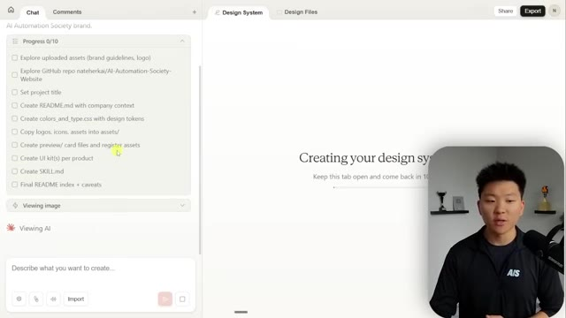
🔍 Agrandirnoticeable jump in visual reasoning, which is exactly what they called out right over here. So cloud design is available in research preview, but you have to be on a cloud subscription. So pro max team or enterprise subscribers were rolling out to users gradually throughout the day. So I'm not going to read off all these features because I think you guys understand kind of the premise here, but what's cool is you can collaborate. So designs can have organization scoped sharing.
Interface & Outils : Site web officiel d'Anthropic (anthropic.com).
Contenu textuel & Code : Texte descriptif sur le lancement de Claude Design, ses fonctionnalités (modèle Claude Opus 4.7) et les conditions d'abonnement requises (Pro, Max, Team, Enterprise).
Action / Démonstration : Présentation informative du produit par navigation sur la page web.
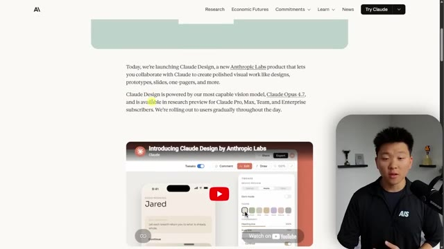
🔍 Agrandir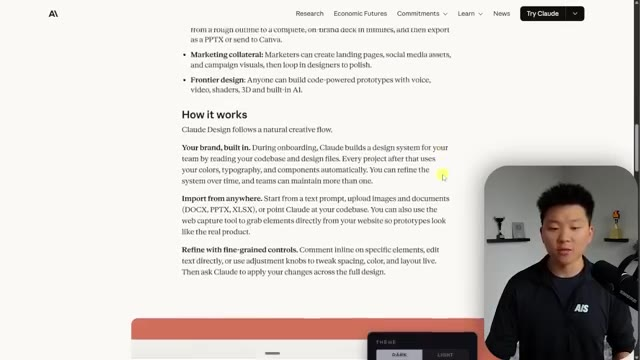
🔍 AgrandirYou can keep something private or you can share it across your team. You can export pretty much anywhere. You can export to Canva, PDF, PowerPoint, or HTML files. And this is where it gets cool. you can hand off to Claude Code. So when a design is ready, Claude can package everything and you can pass it off to Claude Code to do the actual building and syncing to GitHub and all of these other things. Hey guys, real quick, in this video, my computer was freaking out a little bit.
Interface & Outils : Navigateur web (site web d'Anthropic/Claude).
Contenu textuel & Code : Texte descriptif listant : "Collaborate" (partage d'organisation), "Export anywhere" (Canva, PDF, PPTX, HTML), et "Handoff to Claude Code" (package de design pour développement).
Action / Démonstration : Présentation des fonctionnalités de partage et de transfert de flux de travail de design vers l'outil Claude Code.
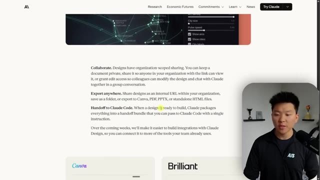
🔍 AgrandirSo there's like a few times where my face cam's super laggy, but it does not last the whole video. Just stick with me for about 30 to 45 seconds of annoying lag, and then we'll be all good to go. Thanks guys, let's get back to the video. Now, a lot of people might be saying that this is gonna kill Canva, but it looks like they're actually working together here. we can see that canvas said we've loved collaborating with anthropic over the past couple of years and share a deep focus on making complex things simple but checking back in on our cloud over here we can see it's doing a lot it's importing from github it's reading everything it's building preview cards and building styles and stuff so i'm just going to check in with you guys once this has been fully built out so it's still working but it came up with something for us as a draft we can
Interface & Outils : Claude Design (plateforme web d'Anthropic).
Contenu textuel & Code : - Image 1 : Options "New slide deck", sélection de "Design system" et zone de création. - Image 2 : Citations de Melanie Perkins (Canva) et Olivia Xu (Brilliant) sur l'intégration de Claude Design. - Image 3 : Logs d'exécution : "Importing from GitHub", "Reading CSS & component files", et check-list de tâches (README, tokens, assets).
Action / Démonstration : - Image 1 : Configuration initiale d'un nouveau projet. - Image 2 : Présentation de cas d'usage et retours d'expérience. - Image 3 : Automatisation d'un processus d'importation et de configuration de design system à partir d'un repo externe.
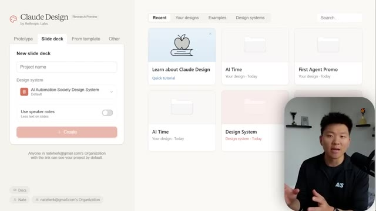
🔍 Agrandir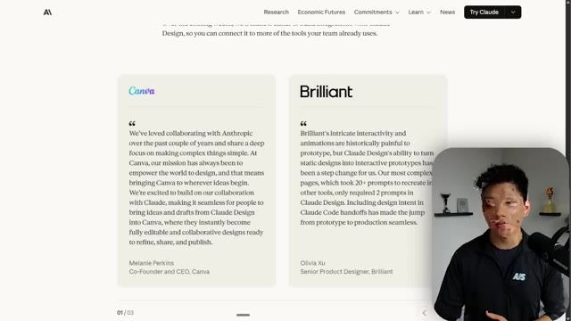
🔍 Agrandirsee that we are missing brand fonts hopefully it's able to find those because in the brand guidelines doc that i gave it there is typography in there so just to pull this up real quick you can see here that we do have two different fonts that we use right there. Anyways, things that need review. So we have the colors. These all look good. And we're able to directly approve right here. So I'll say that looks good. We also have some accents and gradients.
Interface & Outils : Interface de création de Design System (probablement une application assistée par Claude ou un outil similaire).
Contenu textuel & Code : Codes hexadécimaux (#2CA9E1, #2D9B88, #143C5A, #4A98C8), noms de polices (Roboto Mono, Montserrat), et logs de progression de l'IA (Copying, Writing).
Action / Démonstration : Consultation de la charte graphique de la marque ("AIS Brand Guidelines") pour remédier à l'erreur de typographie identifiée par l'assistant IA.
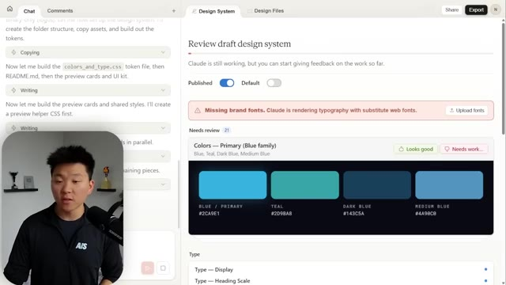
🔍 Agrandir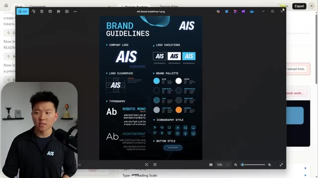
🔍 Agrandir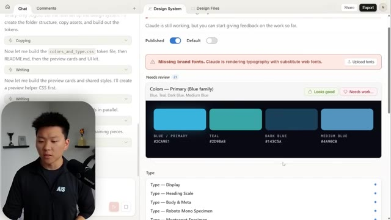
🔍 AgrandirOnce again, I'll click on looks good. We've got neutrals. We've got the type, which looks exactly the way it is on our website. Okay, so what is it talking about? It definitely does have fonts. This is the typography that we actually are using. So I don't know what's going on there. But you can see that there's tons of different things to review. So I'm just gonna keep clicking through and make sure that nothing looks too weird. It's even getting into like the spacing and what the buttons might look like, the glow, all of that looks really nice too.
Interface & Outils : Interface web d'un outil de design assisté par IA (semblable à un éditeur de design system Claude).
Contenu textuel & Code : Spécifications typographiques (Roboto Mono, Montserrat), aperçus de police, et journaux d'activité ("Copying", "Writing") dans la barre latérale gauche.
Action / Démonstration : Le présentateur valide visuellement les choix typographiques proposés par l'IA en cliquant sur le bouton "Looks good".
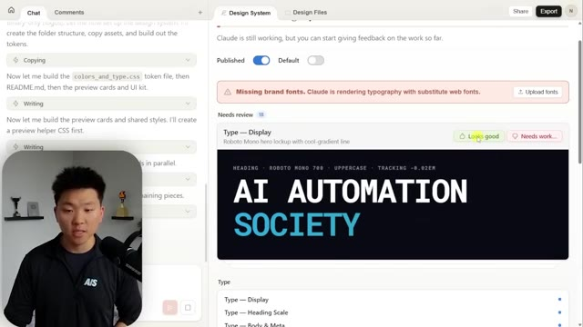
🔍 Agrandir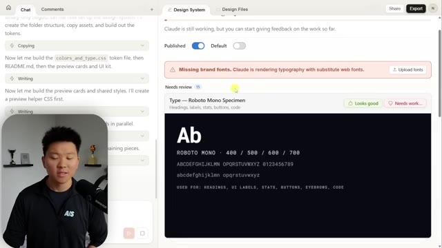
🔍 Agrandir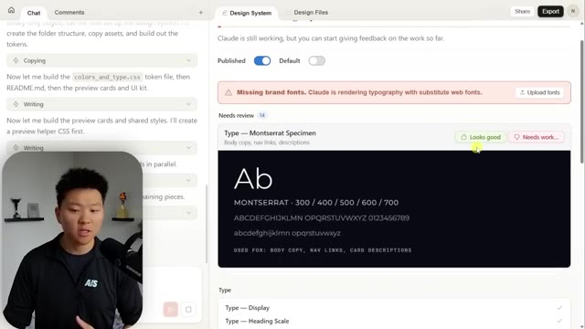
🔍 AgrandirWe've got our buttons, badges, different cards. Okay, so at this point, it really is just pulling everything from our website to understand the brand feel. But we also see up here, there's a tab called design files. And if I click in, we can see different things. We can see the assets that I dropped in. We can also see a preview of the HTML components and some CSS styling stuff. We can see UI kits.
Interface & Outils : Interface de développement et de design assistée par IA (probablement une plateforme de génération d'interface type Claude ou outil de prototyping spécialisé).
Contenu textuel & Code : - Image #1 : Composant "Stats Bar" avec statistiques affichées (300K+ membres, 3.5K+ membres, #1 AI Community). - Image #2 : Liste de fichiers et dossiers du projet, incluant un fichier CSS nommé "colors_and_type.css".
Action / Démonstration : - Image #1 : Navigation dans le système de design et prévisualisation des composants générés. - Image #2 : Navigation dans les fichiers de design et sélection d'une feuille de style CSS pour vérification.
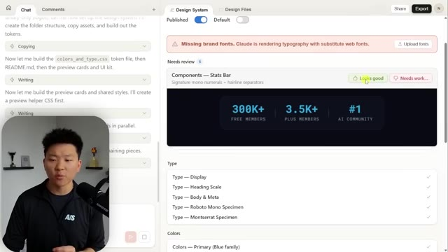
🔍 Agrandir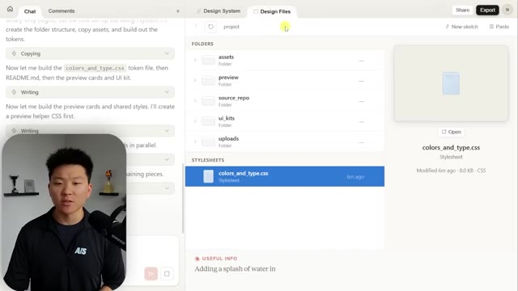
🔍 AgrandirWe can see any uploads and the source repo, which has other things in here too. So yeah, I guess the way I feel about this right now is they basically took your ability to build a Cloud Code design project or website project inside of, you know, your own folders and files. And they just basically put this onto a lovable style interface. So it kind of reminds me of what they did with Cowork. And they're just kind of doing another iteration of Cowork, but this is for design.
Interface & Outils : Interface web d'un outil de développement/design assisté par IA.
Contenu textuel & Code : Journal d'exécution des tâches : "Now let me build the colors_and_type.css token file", "Now let me build the preview cards and shared styles", "Now let me batch-create all the preview cards in parallel". Panneau central listant les composants (Type, Colors, Spacing) et message d'erreur : "Missing brand fonts. Claude is rendering typography with substitute web fonts."
Action / Démonstration : L'IA est en train de générer et d'assembler automatiquement des fichiers CSS, des styles partagés et des cartes de prévisualisation pour un système de design.
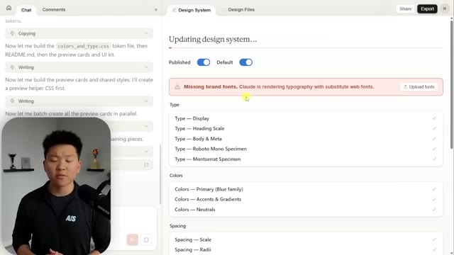
🔍 AgrandirAnd what's cool about this is a lot of times when you're building design things, you're brainstorming with Cloud Code about the actual like code or the logic. And then you kind of have a bit of a surprise when it opens up a local host and you look at it. But this way you're able to sort of iterate with it all the way through. So essentially you will be saving tokens because it's kind of the whole theory of having a better planning phase where it might be more upfront, but then what happens is you are spending less because you're not chasing it down the wrong path and trying to course correct it.
Interface & Outils : Interface web d'un agent de développement (type Claude Artifacts/Canvas).
Contenu textuel & Code : Liste de tâches techniques incluant "Writing assets", "index.html", correction d'erreurs d'importation Babel et gestion de polices de caractères manquantes. La partie droite détaille la structure d'un Design System (Type, Colors, Spacing).
Action / Démonstration : L'agent automatise la construction du kit UI et signale des erreurs de typographie lors de la mise à jour du système de design.
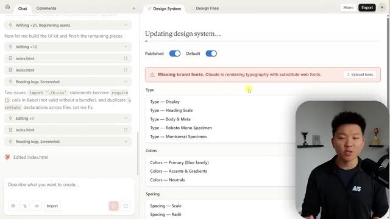
🔍 AgrandirSo we're still missing our fonts apparently. I'm not gonna mess with that because it has our typography and that looks fine. It went through a ton here. You can see what it did is it created colors and type. We have a readme. We have also a skill.md, which is a machine readable manifest for CloudCode. And I'm assuming somewhere in here there is a design MD or maybe that's exactly what we just built together. So now your team's new projects will use this design system by default, which is awesome.
Interface & Outils : Application web de design/génération de système (type interface d'agent de design assisté par IA).
Contenu textuel & Code : Liste des éléments générés : "colors_and_type.css", "README.md", "SKILL.md", ainsi que des sections détaillées sur le système de design (UI Kit, Type, Colors, Spacing, Components).
Action / Démonstration : L'agent IA a terminé la génération du système de design et affiche un récapitulatif textuel et visuel des fichiers créés et de la structure du design system.
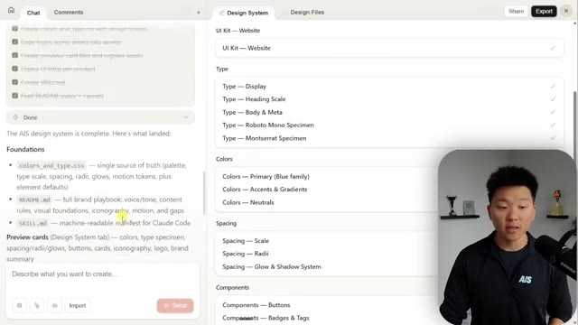
🔍 AgrandirAll of our slides, all of our, you know, whatever it is are gonna use this. So I'm gonna click on this button and we'll see what pops up next. Okay, so the app is a little laggy. It feels like it's using a decent amount of my RAM, probably because it's in research preview and maybe it's still being rolled out. But anyways, we can look at examples, which is pretty cool. We have shader wallpapers. So that's kind of nice.
Interface & Outils : Navigateur web (page en cours de chargement).
Contenu textuel & Code : Aucun contenu informationnel ou code visible, la zone principale de l'écran est vide/blanche.
Action / Démonstration : Le présentateur attend le chargement d'une application web avant d'effectuer une démonstration.
We have app onboarding. So we could go through the whole flow of an iOS app. We also have text streaming and all of this stuff. We could just go ahead and use the prompt directly. Okay, so I want to first off just try a slide deck. So I'm just going to call this AI time and we're going to go ahead and create this slide deck. It's already using my design system as you can see. And there was a drop down.
Interface & Outils : Plateforme web "Claude Design" (Research Preview by Anthropic Labs).
Contenu textuel & Code : Interface utilisateur avec des champs de saisie pour "Project name", sélection de "Design system", et listes de prompts génératifs (ex: "On a responsive grid, animate 10 different text-streaming animations...").
Action / Démonstration : Navigation et présentation des capacités de génération de design et d'animation de l'outil par le présentateur.
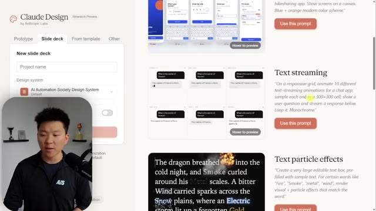
🔍 Agrandir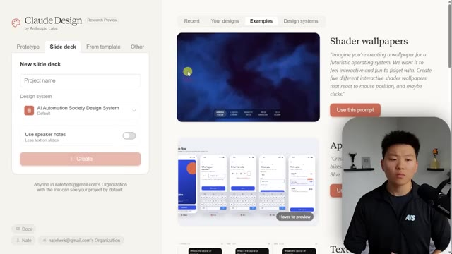
🔍 AgrandirSo that means you can probably have multiple different design systems. If you've got like different business units or you've got different business branding for different things, you can create a design system for each one. So it says start with context. Designs grounded in real context turn out better. We can attach a design system, screenshots or a code base. All right. So what I did is I just dropped in this PDF and this is the one that I just made for a previous video, basically a huge setup guide for setting up Claude Opus 4.7 as a 24 seven trading bot. So I dropped in that PDF and I just want to see if it can turn that into a presentation for me.
Interface & Outils : Outil d'IA basé sur le web (semblable à v0 ou similaire).
Contenu textuel & Code : Texte affiché : "Start with context", "Designs grounded in real context turn out better.", "Design System", "Add screenshot", "Attach codebase", et dans la zone de prompt : "Make a deck", "AI Automation Society Design System".
Action / Démonstration : Configuration du contexte de l'IA par l'utilisateur en ajoutant un "Design System" spécifique avant de lancer une génération.
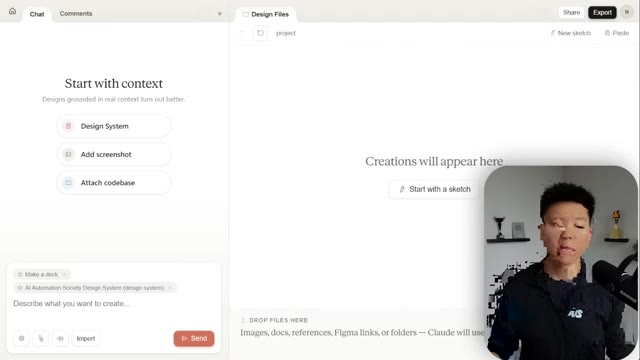
🔍 AgrandirSo I just gave you a PDF called Opus 4.7 trading bot. I'm not sure if I was supposed to drop it right here or if I was supposed to drop it here, but either way you should be able to see it. And I just want you to turn that into a branded PDF, sorry, not PDF, a branded presentation for me. Okay, so that prompt was horrible. I kind of just like started talking all over the place, but let's see what it can do.
Interface & Outils : Plateforme de design basée sur l'IA (type Uizard).
Contenu textuel & Code : Dans la zone de saisie ("chat"), on voit deux fichiers attachés : "AI Automation Society Design System" et "Opus 4.7 Trading Bot - Setup Guide.docx.pdf".
Action / Démonstration : L'utilisateur a importé ses documents dans l'interface et s'apprête à formuler un prompt pour convertir ces données en une présentation de type "deck".
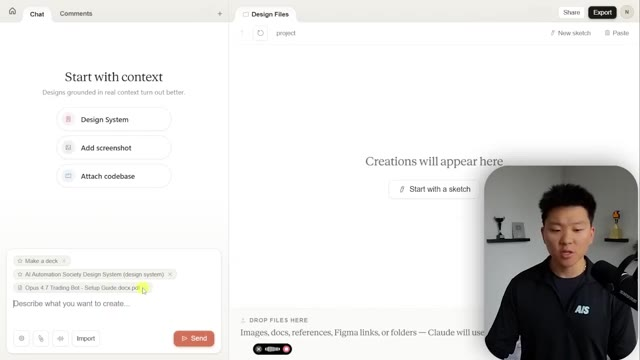
🔍 AgrandirIt's going to invoke a skill. So let's see which one it's running here. It's running the read PDF skill. I was able to read it and now it's checking the design system and it's setting up the project right here. It planned out the deck. So you can see this is basically 19 different slides that it's gonna create. And now hopefully all of this looks pretty aesthetic and it feels on brand. Okay, this is interesting. We got some sort of internal error, maybe because tons of people are trying to use this right now, but it automatically shot off two retries.
Interface & Outils : Interface web de type "Canvas" ou environnement de développement d'agent IA (Claude-like).
Contenu textuel & Code : Journal de logs : "Invoking skill, Running script, Listing files", "Invoking skill: read_pdf", "Running script: const { PDFParse } = await import...", "Listing files 40053de9...". Arborescence de fichiers : "assets", "uploads", "colors_and_type.css", "deck-stage.js".
Action / Démonstration : L'agent IA analyse le contenu d'un PDF, charge des scripts de parsing, accède au système de design (CSS) et prépare la configuration initiale d'un projet de présentation (deck).
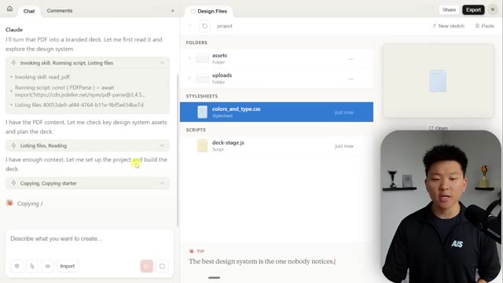
🔍 AgrandirSo it does have that functionality. Oh, here's a nice little useful tip. Store bread in the freezer, toasting it from frozen tastes better than fresh. Okay, so it's still editing some stuff, but you can see right off the bat, this feels very branded to me. The colors, the typography, the logos, everything. So as we start to sort of swipe through here, we can see we're still getting the same feeling with all the fonts.
Interface & Outils : Environnement de développement intégré / Plateforme de création de contenu assistée par IA (semblable à un outil de génération de slides/code).
Contenu textuel & Code : Fichiers : "colors_and_type.css", "deck-stage.js". Texte : "Store bread in the freezer. Toasting it from frozen tastes better than fresh." Titre projet : "OPUS 4.7 TRADING BOT".
Action / Démonstration : Navigation dans l'arborescence des fichiers de design et visualisation du rendu final d'une présentation générée par IA.
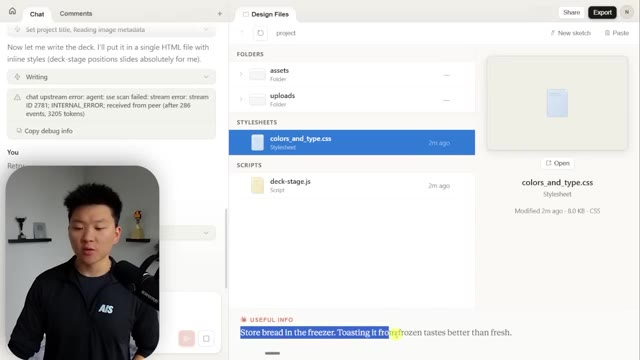
🔍 Agrandir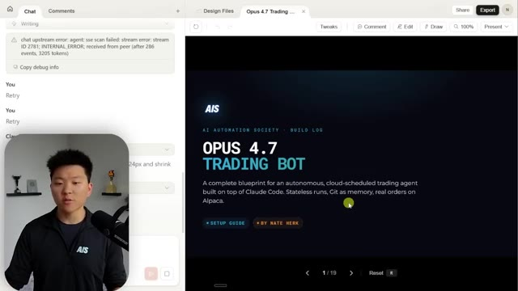
🔍 AgrandirWe're getting the information from the actual PDF. You can tell there's some sort of skills going on on the backend. I don't know if you guys have ever tried to create like a slide deck with Claude Code, but this looks really, really good. And think about the fact that I just dropped in a PDF. So obviously like this, I don't like, I don't like all the spacing here, but something like this is really nice.
Interface & Outils : Interface web d'outil de présentation (type outil de design/prototypage) intégrée avec Claude AI.
Contenu textuel & Code : Texte de la diapositive : "PART 01 - DESIGN PRINCIPLES", "WHY THIS DESIGN", "01 STATELESS RUNS", "02 GIT AS MEMORY", "03 HARD RULES AS GATES". Dans la fenêtre de chat : "Let me fix the findings: bump eyebrow size to 24px and shrink the...".
Action / Démonstration : Le système affiche une diapositive générée à partir d'un PDF, tandis que Claude apporte des modifications de design en temps réel (ajustement de la taille des éléments textuels/visuels).
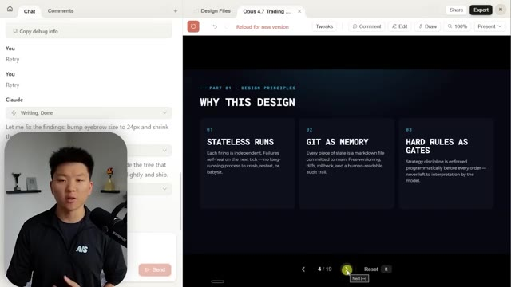
🔍 AgrandirI like the glow down here. This is very nice. Okay, I like this slide a lot as well. We can see the repository layout. So anyways, this is awesome. Now what we can do is we can see there's a button here that says tweaks. We can ask Claude to change something about a specific slide. We can leave comments as well. We can actually like choose something and comment on it. So that's very nice about like a very specific element.
Interface & Outils : Interface web de génération de présentations assistée par Claude (type éditeur de slides IA).
Contenu textuel & Code : Textes explicatifs sur l'architecture logicielle : « The Three Wrappers » (scripts Bash) et « The Prompt Scaffold » (gestion des routines de prompts et contrôle de version git).
Action / Démonstration : Navigation entre les diapositives et ouverture du menu « Tweaks » pour interagir avec l'IA afin de personnaliser le design ou le contenu des slides.
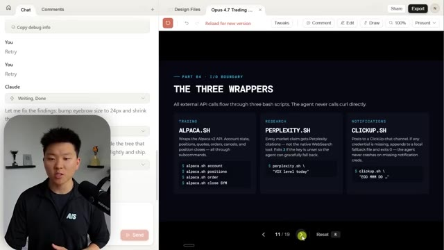
🔍 Agrandir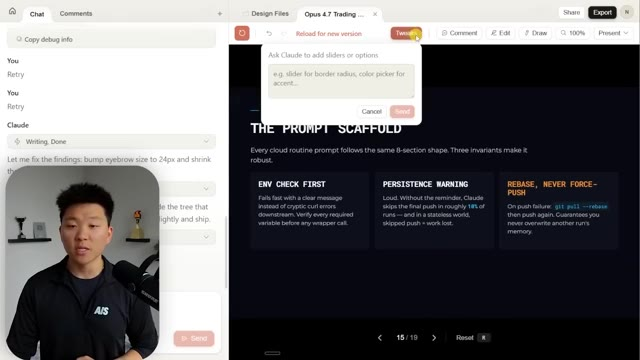
🔍 AgrandirWe can click on edit. So we can actually physically change the things ourselves we want to. We also have this option to draw. I'm not sure what this is. Maybe just to like point at something. Okay. So I basically just drew and I typed and said, I don't like this. And I click send. Okay. So it sends over that image of what I drew and then it sends over my note as well. So I'm just going to go ahead and stop that because there was nothing wrong with it, but we can also present right from here. So we can present full screen right in this tab. And I know that aspect ratio got weird for you guys, but we can present there or just like that. There you go. Now you can see it for real. Okay. So that's very awesome. That's going to help us be able to create slide decks so
Interface & Outils : Interface de travail d'un agent IA (probablement Claude.ai ou un outil similaire intégré avec des capacités de dessin/annotation).
Contenu textuel & Code : Texte affiché : "THE PROMPT SCAFFOLD", "ENV CHECK FIRST", "PERSISTENCE WARNING", "REBASE, NEVER FORCE-PUSH", et logs de conversation de l'agent.
Action / Démonstration : L'utilisateur utilise la fonction de dessin ("Draw") pour annoter visuellement une zone de l'interface de design avant de soumettre la modification à l'agent.
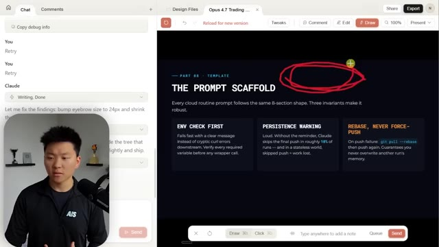
🔍 Agrandir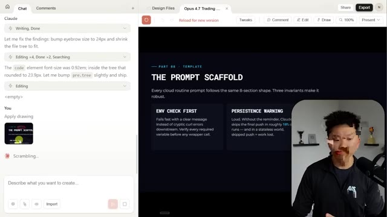
🔍 Agrandirmuch quicker. And honestly, I like this more than gamma because gamma has its own things and it's really nice, but it's a bit more inflexible. So if you dropped in an entire, like just transcript or, you know, a 50 page brain dump, it would be able to structure it into a way that you like in here. And it would also feel like it comes from your brand. Okay. So let's go back home.
Interface & Outils : Application web de génération de présentations/documents (similaire à Gamma ou outil équivalent).
Contenu textuel & Code : Schéma d'arborescence de fichiers (trading-bot/, routines/, scripts/, memory/) et blocs explicatifs sur les modes "Local" et "Cloud" de l'agent. La barre latérale gauche montre des logs d'édition de l'IA (Claude).
Action / Démonstration : Visualisation d'une présentation structurée automatiquement par l'IA à partir de données techniques.
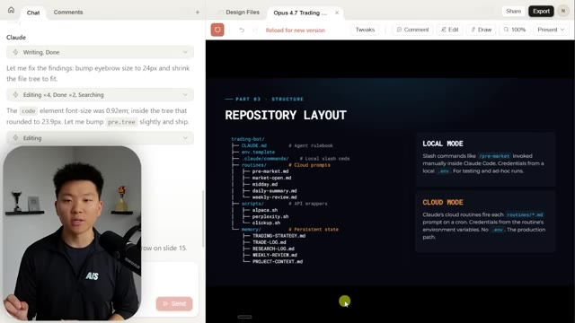
🔍 AgrandirThat's kind of what we can do with slide decks or presentations. Let's see what it can do with an actual landing page. So I'm going to go over here to prototype and we're just going to do a high fidelity. We're just going to go straight after it with the high fidelity. I'm just going to call this one a first agent promo and we're going to click create. So let's say you have your main website for your brand, right? So we have AI Automation Society, which is just kind of like an overall overview. But what if we want to create like a different landing page that would go on a subdomain because maybe we're launching like a limited time workshop or promotion. All right. So that's pretty vague, right? Like there's a little bit of detail, but it's pretty vague,
Interface & Outils : Application web Claude Design (Research Preview).
Contenu textuel & Code : Options de création de projet : champ "Project name", sélection de système de design ("AI Automation Society Design System"), et choix du type de rendu (Wireframe vs High fidelity).
Action / Démonstration : Le curseur de la souris survole l'option "High fidelity" pour préparer la création d'une maquette haute fidélité.
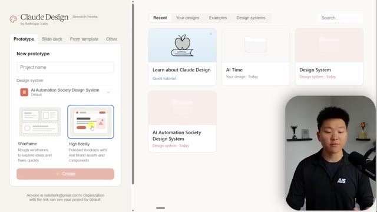
🔍 Agrandirbut it's going to be able to use our design system. And I'm curious to see, there we go. It's asking us questions and it's asking us right over here. So what is the workshop called? We're going to say your first AI agent confirm the dates, May 4th to May 6th. Sure. What time each day? We're just going to go 9am to 11am central. Is there a seat cap? We're just going to say, yeah, sure. Early bird pricing. Who's hosting? I'll host it. What do you want your students to walk away with your first AI agent built with cloud code and the day by day agenda. Sure. High level
Interface & Outils : Interface web d'outil de design ou de gestion de projet (ex: Framer ou outil similaire).
Contenu textuel & Code : Questionnaire avec les champs : "What's the workshop called?" (options : Your First AI Agent, Build Your First Agent, etc.), "Confirm the dates" (options : May 4-6, etc.), et "What time each day?". Une barre latérale à gauche affiche un récapitulatif textuel du projet.
Action / Démonstration : L'utilisateur est en train de remplir ou de valider les informations pour la génération de la landing page du workshop.
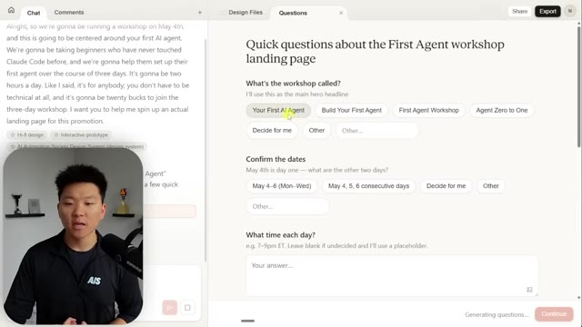
🔍 Agrandirper day. Okay. So as you can see, it's, it's getting all the questions that it needs from us in order to be able to make this landing page. All right. So I answered all of those questions. There was a lot, but that's once again, a very good thing. Let's see what we get. We have our page now and we have some tweaks that we can make. So it opened up a panel right here. You can see that we can change the early bird. So I could change this to April 30th and it would update. I don't know where it was. Oh, okay. I found it. April 30th. I could change this to April 29th. There we go.
Interface & Outils : Interface web de type outil de prototypage IA (similaire à Claude / V0.dev).
Contenu textuel & Code : Prompts de description de projet, liste de tâches ("Explore AIS design system", "Set up project folder"), réglages de landing page (couleurs, minuteurs, liens).
Action / Démonstration : L'agent IA traite les spécifications utilisateur pour structurer le projet, puis affiche le résultat final avec des options de personnalisation en temps réel via le panneau "Tweaks".
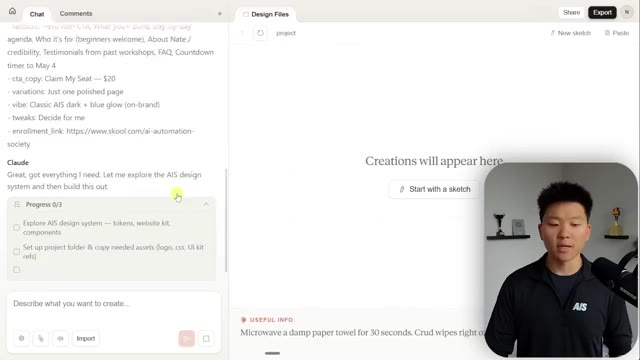
🔍 Agrandir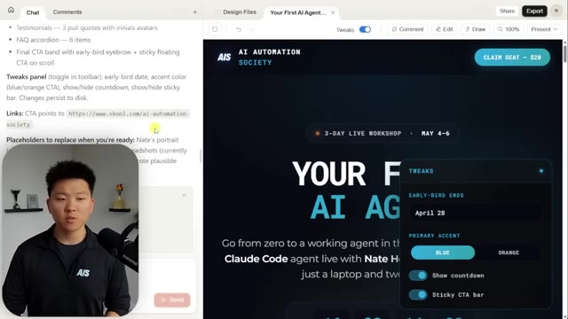
🔍 AgrandirWe can make that tweak. The primary accent can be orange instead of blue. So if we wanted to change it to orange, we certainly could that easily. We have a countdown right here, which we could turn off. And we also have a sticky CTA bar, which we could turn off as well, which is right here, as you can see. And now I could just turn this off when I'm all good with the tweaks. So let's take a look at the actual content here. First of all, you'll notice this feels exactly like the website and all of these elements feel the same with the buttons and the colors and the spacing, all of that. Even the copy has a very similar feel. The capitalization, the icons, very nice. We've got the three-day plan. It goes through one, two, three, built for beginners. I
Interface & Outils : Outil de conception web ou plateforme de prototypage (type Figma ou éditeur no-code).
Contenu textuel & Code : Panneau "TWEAKS" affichant les réglages : "PRIMARY ACCENT" (Blue/Orange), "Show countdown" (toggle), "Sticky CTA bar" (toggle).
Action / Démonstration : Démonstration des options de personnalisation de l'interface en temps réel via des commutateurs (toggles).
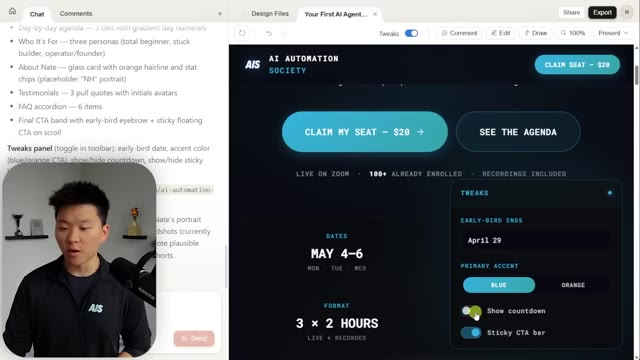
🔍 Agrandirwould have to upload my image, which would go right here as far as like who is the instructor. And then we've got some testimonials right here. What we would do now is we'd go back and forth and iterate and we'd see the version and we'd keep making tweaks and we'd comment on things. And that's how we would get this to the point that we want it. But now how do we actually get this project on the web? Well, we have an export button up here. We can download the zip, a PDF, a PowerPoint.
Interface & Outils : Figma (ou outil similaire de design collaboratif)
Contenu textuel & Code : Liste de points de contrôle de design : "Day-by-day agenda", "Who It's For", "About Nate", "Testimonials", "FAQ accordion", "Final CTA band". À droite, aperçu visuel de la page avec les témoignages de Maya Chen et James Patel.
Action / Démonstration : Le présentateur illustre le processus de design itératif en montrant le flux de travail où les notes de conception correspondent au rendu visuel de la page web.
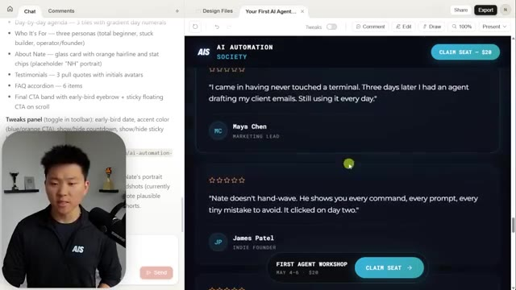
🔍 Agrandirwe can send to Canva, we can export the HTML, or we can hand off to Cloud Code. So let me see what happens if I click on this. Okay, so it says, fetch this design file, read its readme, and implement the relevant aspects of the design. And I'm gonna go ahead and click on copy command. And now in VS Code, I have the actual project open, which is the AIS website that it had looked at originally. And I'm gonna paste in that prompt, and we'll shoot it off and we'll just see what happens.
Interface & Outils : Interface web de design (V0 ou similaire), Visual Studio Code, Terminal Claude Code v2.1.112.
Contenu textuel & Code : Commande affichée : "Fetch this design file, read its readme, and implement the relevant aspects of the design." + URL du fichier de design.
Action / Démonstration : Copie de la commande depuis l'interface web pour une exécution ultérieure dans l'environnement de développement VS Code.
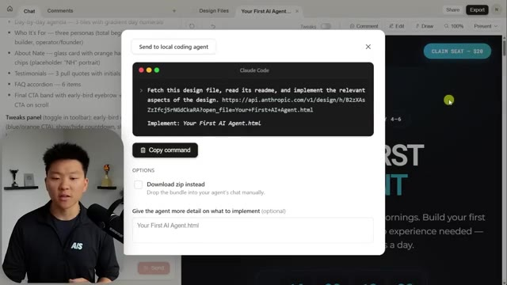
🔍 Agrandir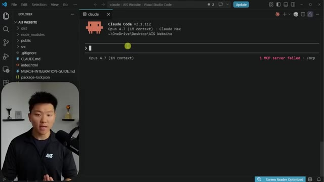
🔍 AgrandirOkay, so you can see it's able to go to this endpoint, and it's able to fetch the design file that we need. So basically, it's going to extract that zip file that we just made over here together in Cloud Design. And while this is running, I just wanna say, this is really impressive to me. It basically just loops everything into Anthropix ecosystem. Like I understand the play for sure because I might not even need my Gamma subscription anymore or I might not even need my Canvas subscription anymore if I can basically just have all of my things synced together and all of my team working on the same projects and the same design systems in the same environment.
Interface & Outils : Visual Studio Code avec le terminal intégré "Claude Code" (v2.1.112).
Contenu textuel & Code : Log d'exécution affichant le prompt de l'utilisateur ("Fetch this design file..."), le succès de la requête HTTP (200 OK), et l'exécution d'une commande Bash de manipulation de fichiers (mkdir, cp).
Action / Démonstration : L'agent IA automatise la récupération d'un fichier .gzip depuis une API et prépare son extraction dans un répertoire temporaire du système local.
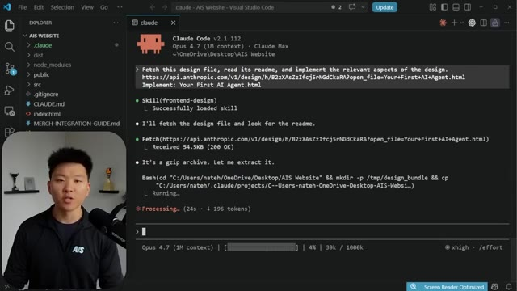
🔍 AgrandirEspecially when you think about the fact that in order to make these landing pages and in order to make your presentations, Context is everything and when i'm making presentations in gamma, I have to go get from my cloud code projects So much context and so many maybe meeting transcripts or different memos or something But if all of that already lives inside of my cloud code environment and then I say hey Make me a presentation about x y and z go look in the right projects. That's like a huge help So I think the flow is you come to cloud design And you have your design elements and you have your projects here and you do your prototyping here and you do your
Interface & Outils : Visual Studio Code avec le terminal de l'agent IA Opus 4.7.
Contenu textuel & Code : Commandes bash (`cp -r`, `ls`), arborescence de fichiers du projet (app.jsx, colors_and_type.css), et état d'exécution de l'agent ("Thinking", "Working through it", "Cooking...").
Action / Démonstration : L'agent IA analyse la structure des fichiers du projet existant ("AIS website structure") et exécute des commandes de manipulation de fichiers pour préparer l'intégration d'un nouveau composant.
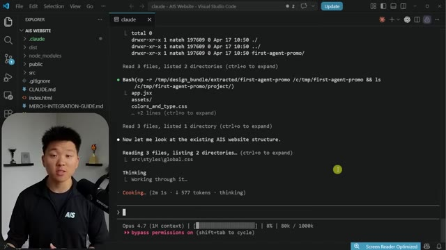
🔍 Agrandiryou know, slide deck building. And then when you need to actually take it one step further to deploy it or to maybe integrate some other deeper things into it, that's when you send it over to Cloud Code with the click of a button, and then you can expand the functionality from there. Okay. So the server is up. It also said that it automatically switched out my image. Remember if you guys saw in this version, where were we first agent promo in this version, there was a placeholder basically for my image, which was right down here. So it looks like I didn't even tell it to do that by the way. And it was able to fill that in. So let's open up the local host. We have the homepage right here, AI Automation Society. Yep, that's the homepage. But then if we go back to the actual
Interface & Outils : Interface web de Claude Design (outil de conception générative) et aperçu de fenêtres de terminal/VS Code en bas.
Contenu textuel & Code : Liste de fichiers de design ("Learn about Claude Design", "First Agent Promo"), spécifications de mise en page, boutons "Export" et "Claim Seat".
Action / Démonstration : Navigation au sein de l'interface de design et démonstration visuelle du résultat final généré.
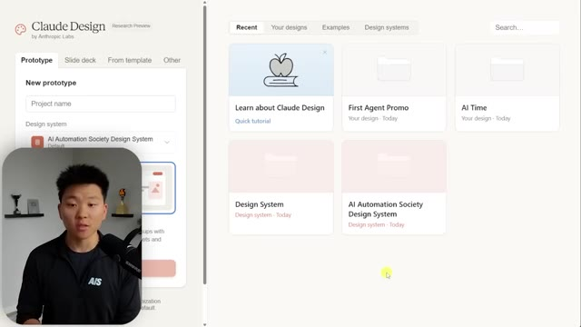
🔍 Agrandir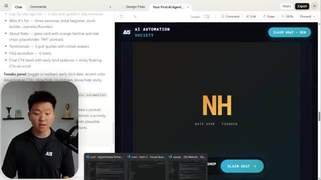
🔍 Agrandirworkshop page, which would be kind of like a subdomain, there we go. We have the your first AI agent. We've got the countdown. We've got the buttons. We've got all the same information, the sticky CTA down here. And if I keep scrolling down, we have the actual image. Although this isn't the right one. This is one of my other website. I would ideally want like a headshot, but that would be as simple as dropping in a headshot and saying, hey, use this instead. And it would go ahead and update that. And now, because we're already inside of this project, all I would have to do is push this to GitHub and then Fussell would grab it and I could sync it to a different subdomain. So that is Anthropic's new cloud design. Like I said, I think this is awesome. I'm definitely
Interface & Outils : Visual Studio Code, terminal intégré (Claude Code / Opus 5.5 CLI).
Contenu textuel & Code : Commandes terminal : `npm run dev`, `vite`, `http://localhost:5173/first-agent`. Logs d'exécution de l'agent IA.
Action / Démonstration : Lancement du serveur de développement local (`npm run dev`) pour prévisualiser la page du workshop générée.
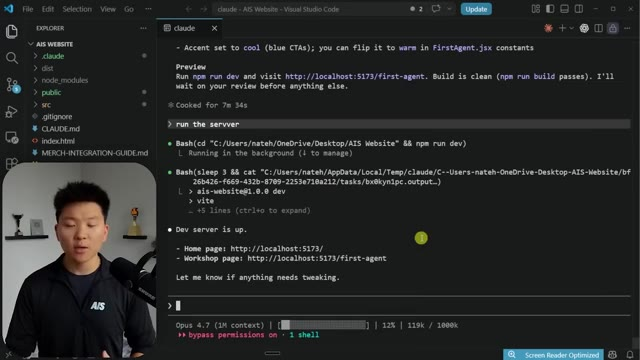
🔍 Agrandirgoing to be playing around with this. I'm going to be making a lot of presentations in there. I can already tell you guys that for certain. So if you enjoyed the video or you learned something new, please give it a like. Helps me out a ton. And as always, I appreciate you guys making it to the end and I'll see you in the next one.
Interface & Outils : Navigateur web affichant le site web d'Anthropic.
Contenu textuel & Code : Titre "Introducing Claude Design by Anthropic Labs" avec la date "Apr 17, 2026" et une illustration graphique abstraite.
Action / Démonstration : Présentation statique de l'annonce d'un nouveau produit sur le site officiel.
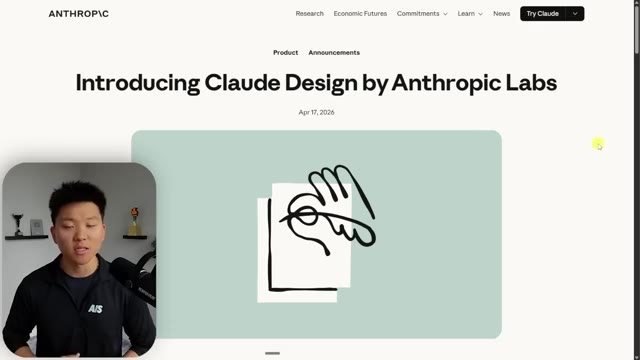
🔍 Agrandir